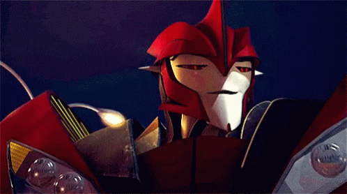

Knock Out
Нокаут — стильный и харизматичный десептикон из мультсериала Трансформеры: Прайм. Он является врачом команды, область его интересов включает в себя как лечение кибертронцев, так и косметическую хирургию, и эксперименты во имя науки. Любит скорость, блеск и ненавидит царапины на корпусе.
- Фракция: Десептиконы
- Роль: Полевой врач
- Альт-форма: Спортивный автомобиль
О персонаже:
- Эксперт в медицине для организмов с Кибертрона
- Одержим своей внешностью
- Обожает участвовать в человеческих гонках, но не для победы, а для ощущения скорости
- Иногда проявляет сочувствие, несмотря на принадлежность к десептиконам, фракции антагонистов во вселенной Трансформеров
- Лучший персонаж, по моему мнению